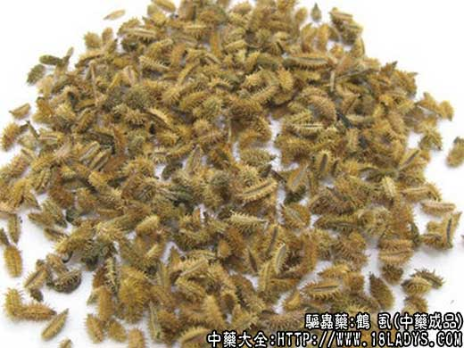
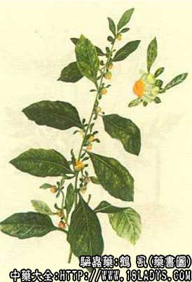

原文连接:https://www.daquan.com/post/2391.html



鹤虱为较常用中药。始载《新修本草》，据考证认为是“山道年花”。《图经本草》记载为“天名精”，《本草纲目》则收载鹤虱于“天名精”项下，清代出现以野胡罗卜子作鹤虱使用。现金国各地使用的鹤虱，按植物划分最常见有的：①菊科小鹤虱、大鹤虱。②伞形科南鹤虱、华南鹤虱。③紫草科东北鹤虱、内蒙古鹤虱，共三科六种。京津两市习销小鹤虱、大鹤虱及南鹤虱。
1、小鹤虱
别名：北鹤虱。
来源：为菊科多年生草本植物天名精的成熟干燥果实，野生。
产地：主产于中南、西南、华东等地区。
性状鉴别：瘦果小棒槌状，长3毫米左右，直径不足1毫米。表面暗褐色或黄褐色，具纵顺棱沟多条。一端稍细，先端呈环形凹陷；另一端收缩呈棒柄状，未端再扩展成喇叭口状。商品常常有少数苞片，新货显油粘性，陈货则松散。有特殊臭气，味苦。
2、大鹤虱
来源：为菊科植物天明精属烟管头草的成熟干燥果实。野生。
产地：同小鹤虱。
性状鉴别：与鹤虱形色相似，唯瘦果稍大，长4～5毫米，直径约1毫米。气微，味稍苦辛，并有灼刺唇舌感。
小、大鹤虱均以果实成熟，显油润，苞片少者为佳。
主要成分：天名精果实含挥发油，其中主要为天名精内酯、天名精酮。胡罗卜果实含挥发油、油中含细辛醛、黄色结晶物，又含南鹤虱醇胡萝卜醇。
药理作用：驱虫（主要为蛲虫、蛔虫）。实验发现天名精内酯能麻痹蚯蚓的延髄中枢而具强力的灭活作用。胡罗卜子具有解除痉挛和舒张血管的作用。
炮制：生用。
性味：苦、辛、平。有小毒。
归经：入肝经。
功能：杀虫。
主治：虫积腹痛等症。
临床应用：治蛔虫、蛲虫、绦虫。但单用效力不大，需配使君子、槟榔、雷丸等药，方如化虫汤。
治钩虫效果也较好。
用量：3～9g。
处方举例：
化虫汤：鹤虱9g，苦楝根皮9g，槟榔9g，芜荑9g，使君子肉9g，雷丸9g，水煎，清晨空腹时服，连服两剂。
3、南鹤虱
来源：为伞形科一年生或二年生草本植物野胡罗卜成熟干燥果实。野生或裁养。
产地：主产华东、中南、西南等地区。栽培品全国均产。
性状鉴别：本品为双悬果，广椭圆形，商品多为分果，长3～4毫米，宽1.5～2.5毫米。表面黄棕色或淡褐色。顶端有花柱残基，底端钝圆偶带小果柄。背面隆起，有四条棱线，棱线上密生黄白色钩剌，刺长1.5毫米左右。腹面平坦稍向内凹陷，有三条明显的纵脉纹，搓碎后有特异香气。味微辛苦。
4、华南鹤虱
来源：为伞形科一年生或二年生草本植物窃衣的成熟干燥果实。野生。
产地：主产于湖南、广西、福建、四川等地，其他各省多有分布。
性状鉴别：本品椭圆形，商品多为分果，长2～4毫米，宽1～2毫米。表面黄绿色或淡棕色，背面隆起，密生不规则的钩剌。腹面呈凹糟状，中央有脉纹一条，气味与南鹤虱略同。
两种南鹤虱以果实成熟、无枝梗者为佳。
炮制：生用。
效果：同北鹤虱。
5、东北鹤虱
来源：为紫草科一年生草本植物鹤虱（赖毛子）的成熟干燥果实。野生。
产地：主产于东北地区，华北、西北及河南等地均有分布。
性状鉴别：本品为卵形四裂小坚果，商品已裂为单果，呈卵状三棱形，上端尖瘦，下端钝圆。长2.5毫米左右，下端宽约1.5毫米。黄褐色或褐色，密被瘤状突起。腹面有一条线形突起，背面边缘有锚状钩剌二列，不等长，背面中央多无刺。气微，味淡嚼后微香。
6、内蒙古鹤虱
来源：为紫草科一年生草本植物中间鹤虱的成熟干燥果实。野生。
产地：主产于内蒙古、甘肃等地。
性状鉴别：形色与东北鹤虱近似，唯边缘只具钩刺一列。
以上两种鹤虱以果实成熟，黄褐色者为佳。
炮制：生用。
效用：同上
注：除上述品种外，还有少数地区以菊科植物金挖耳及其同属千日草、杓耳菜的果实作大鹤虱使用，形态与大鹤虱相似，也有使用伞形科破子草的果实作华南鹤虱使用，形态与窃衣相似。以上这些鹤虱均为杀虫药，每一品种的效果如何，对那种虫驱杀作用最好，尚待研究探讨。